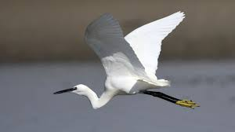
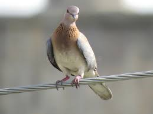
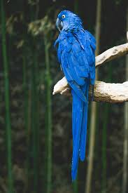

karina is a science writer for Sea Grant and a former editor. She's based in Carolina..
Woodland edges, thickets, suburban gardens, towns, desert washes. Found in a wide variety of brushy or semi-open habitats in the East, from forest clearings and swamps to city parks, almost wherever there are some dense bushes for nesting. In the Southwest, more local; occurs in tall brush, streamside thickets, groves of mesquites in desert..
roadsides, brush, towns, gardens. Favors semi-open areas with dense low growth at all seasons. Breeds around thickets, hedgerows, woodland clearings and edges, and undergrowth of open woods. Winters in similar habitats in Florida, plus areas of scrub and second growth in the tropics.
swamps, rivers, ponds. Favors shallow inland lakes, ponds, slow-moving rivers, swamps, mainly those surrounded by deciduous or mixed woodland. Often in places where large trees overhang the water, creating shady conditions. Also in open marshes within generally forested country..
